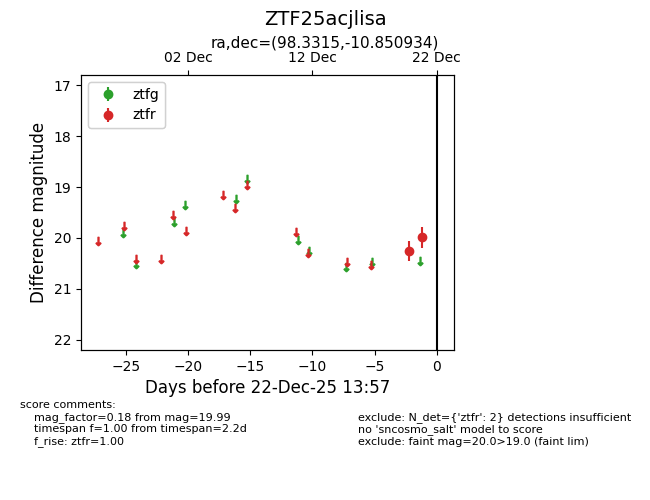
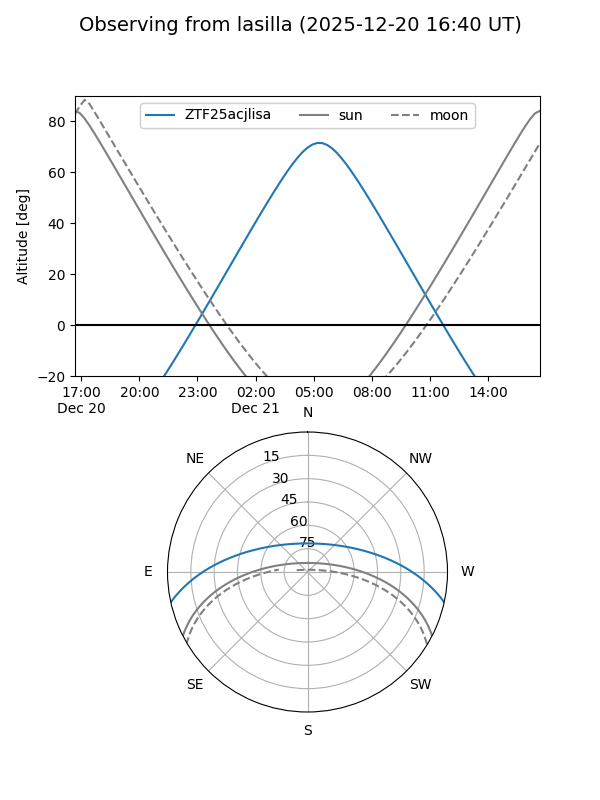
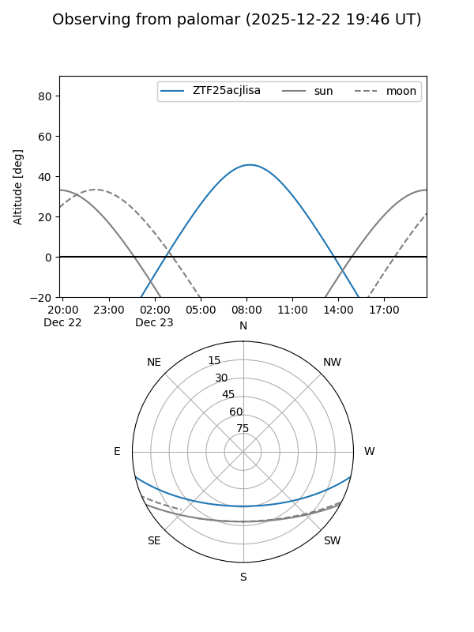

ZTF25acjlisa
Target ZTF25acjlisa at 2025-12-22 14:03
Aliases and brokers:
FINK: fink-portal.org/ZTF25acjlisa
Lasair: lasair-ztf.lsst.ac.uk/objects/ZTF25acjlisa
ALeRCE: alerce.online/object/ZTF25acjlisa
alt names
ZTF25acjlisa (ztf,fink_ztf)
Coordinates:
equatorial (ra, dec) = 98.3315,-10.85093
equatorial (HMS+DMS) = 06:33:19.55,-10:51:03.36
galactic (l, b) = (220.6214,-8.90788)
Flags:
Photometry:
last ztfr=19.99
2 ztfr detections
Lightcurve

Visibility


Additional plots